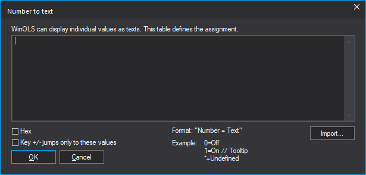

|
Number to Text |

  
|
|
Number to Text |
|
You can use this dialog to display individual values as text. You can access this dialog via the "Text" button in the map properties.

Sometimes numbers have certain textual meanings. WinOLS can use this dialog to display the text instead of the number in text mode. You can specify ranges by separating 2 numbers with "..". Optionally (with *), all values that are not assigned can be translated to a standard text. All texts should be short, but you can use "//" to define comments that are displayed in the mouse tooltip.
Example:
0=Off
1=On // Tooltip
10..19=Range // With Colors #ff0000 #0000ff
*=Undefined
The tooltip can contain colors in CSS format (RGB or RGBA) for the value in the map. First the text color, then the background color. Or with double # only the background color. Examples:
100 = xy // red text #ff0000
101 = xy // red background ##ff0000
102 = xy // white text on red background (semi-transparent) #ffffff #ff000080
You can edit cells via Inplace Edit and enter the text there.
To transfer the content of text files into this dialog, you can drag the file into this dialog or use the import button. Hex values should have the prefix "0x" in the files. You can also drag (multiple) files directly onto the "Text" button in the map properties dialog. Or hold Shift while clicking the "Text" button to go directly to the file dialog. If you want to add the file (instead of replacing the content), hold down Ctrl while you drag in the file / click on "Import".
If the name of the text file(s) ends with ".number2text.txt", you can drag it directly into the map window.
Shortcuts
| Symbol bar: | - |
| Keyboard: | - |